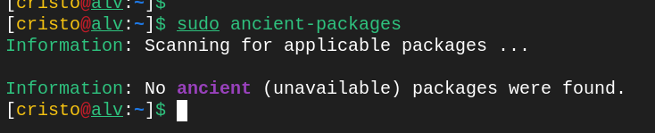
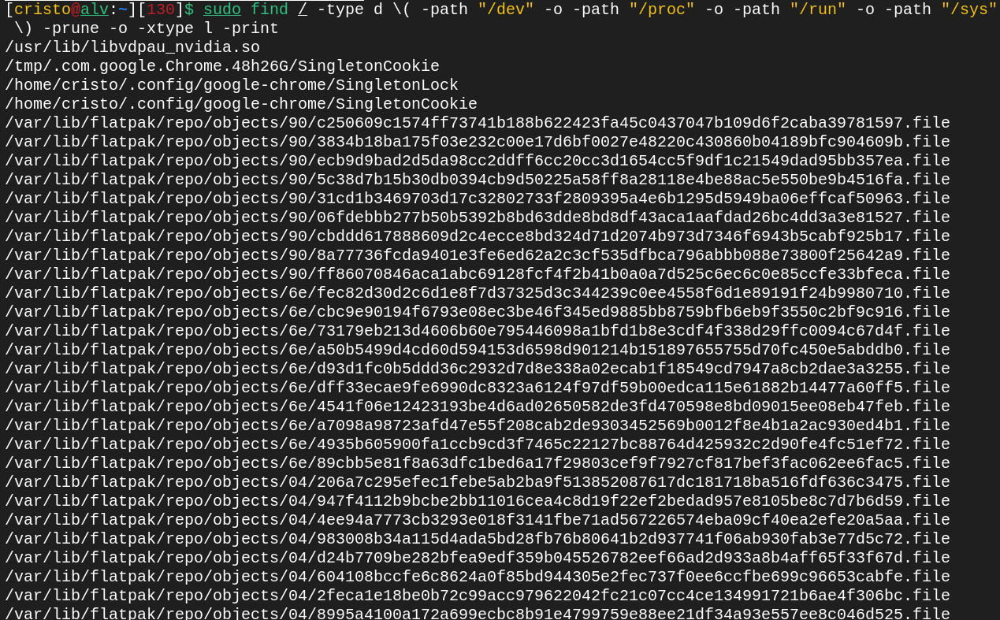
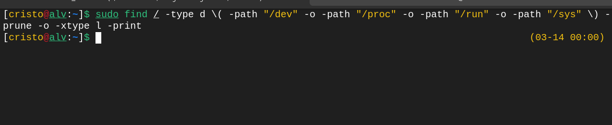
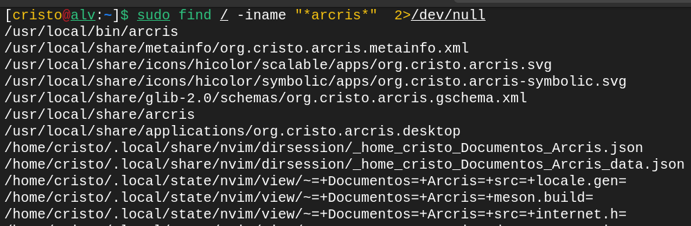
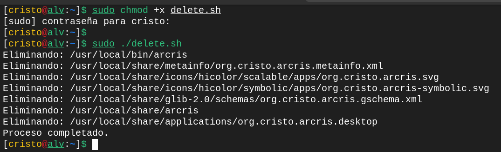

Mantenimiento en Arch Linux
Despues de un par de meses y años esta es la forma que yo empiezo a limpiar y actualizar mi sistema Arch
Actualización del Sistema
Ya se que se actualiza tan fácil con pacman -Syu o yay -Syu, pero si vienen de meses sin actualizar el sistema creanme que es necesario actualizar llaves, repositorios para finalizar con el clásico pacman -Syu.
Primero empiezo actualizando las Keys de los nuevos paquetes que vendrán, para eso hay que inicializar pacman keyring:
[usuario@nombre_de_pc ~]$ sudo pacman -Sy archlinux-keyring --noconfirm
[usuario@nombre_de_pc ~]$ sudo pacman-key --init
Actualizamos los repositorios de Arch eligiendo a los 10 (esto es a su gusto) más rápidos de todos con reflector:
[usuario@nombre_de_pc ~]$ sudo pacman -S reflector --noconfirm
[usuario@nombre_de_pc ~]$ sudo reflector --verbose --latest 10 --protocol https --sort rate --save /etc/pacman.d/mirrorlist
Y finalizamos con actualizar ya el sistema, digamos que primero fue un UPDATE y luego viene el UPGRADE con pacman -Syu
[usuario@nombre_de_pc ~]$ sudo pacman -Syu --noconfirm
Llevo años aplicando estos comandos y por mas que pasen los años se actualiza el sistema sin ningún tipo de problema.
Hay que recordar que si quieren instalar un programa deben actualizar primero el sistema
Limpieza de Cache del sistema
Empezamos Limpiando el cache de todos los programas descargados e instalados del sistema, esto no borra programas, son archivos temporales que se quedan despúes de una instalación de un programa.
[usuario@nombre_de_pc ~]$ sudo pacman -Scc
[usuario@nombre_de_pc ~]$ sudo rm -rf ~/.cache/*
[usuario@nombre_de_pc ~]$ sudo rm -rf /var/cache/pacman/pkg/*
[usuario@nombre_de_pc ~]$ sudo rm -rf /var/lib/pacman/*
Y si usan un asistente de AUR, como YAY o PARU o etc...
[usuario@nombre_de_pc ~]$ yay -Scc
[usuario@nombre_de_pc ~]$ sudo rm -rf ~/.cache/yay
Solo es cambiar el asistente de AUR, por paru, pacaur, aurman, aura y pikaur.
Fuente: https://wiki.archlinux.org/title/AUR_helpers
Limpieza de Programas No Necesarios
Elimine los paquetes no utilizados del sistema para liberar espacio en disco y simplificar el mantenimiento.
Empezamos a revisar la lista de programas que tenemos instalados en nuestro sistema.
[usuario@nombre_de_pc ~]$ pacman -Qqe > pkglist.txt
Eso hará que se guardará toda la lista en el archivo pkglist.txt lo puede revisar con cualquier editor de texto.
Use pacman -Qtd para buscar paquetes que se instalaron como dependencia, pero que ahora no dependen de otros paquetes.
Si el paquete ya no se necesita, se puede eliminar.
[usuario@nombre_de_pc ~]$ sudo pacman -Rns $(pacman -Qdtq)
Desglose del comando pacman -Rns $(pacman -Qdtq)
-R:
Es la operación para eliminar (remove) paquetes instalados en el sistema.
-n:
Elimina los archivos de configuración del paquete (no guarda una copia de respaldo). Por defecto, pacman guarda una copia de los archivos de configuración al eliminar un paquete. Con -n, estos archivos se eliminan directamente.
-s:
Elimina las dependencias no necesarias (dependencias que ya no son requeridas por otros paquetes instalados). Esto ayuda a mantener el sistema limpio y liberar espacio en disco
-Q:
Operación para trabajar con paquetes instalados en el sistema.
-d:
Lista paquetes que son dependencias de otros paquetes instalados, pero que ya no son necesarios (es decir, paquetes huérfanos).
-t:
Lista paquetes que no son requeridos explícitamente por ningún otro paquete instalado (dependencias opcionales no utilizadas).
-q:
Modo silencioso: Muestra solo los nombres de los paquetes, sin información adicional (como la versión o descripción).
Hay que leer bien que estas borrando, aveces metes al paquete programas como gcc, vala, rust, etc algunas cosas que puedes usar mas adelante. O quizás instalarlo luego.
Para excluir los paquetes que (aún) están disponibles en el AUR, pruebe la herramienta ancient-packages en AUR.
[usuario@nombre_de_pc ~]$ yay -S ancient-packages
[usuario@nombre_de_pc ~]$ sudo ancient-packages
Enlaces simbólicos rotos
Para enumerar rápidamente todos los enlaces simbólicos rotos de archivos permanentes en su sistema, utilice:
[usuario@nombre_de_pc ~]$ sudo find / -type d \( -path "/dev" -o -path "/proc" -o -path "/run" -o -path "/sys" \) -prune -o -xtype l -print
El comando que proporcionaste busca enlaces simbólicos rotos (-xtype l) en todo el sistema, excluyendo ciertos directorios como /dev, /proc, /run y /sys.
Para borrar rápidamente todos los enlaces simbólicos rotos de archivos permanentes en su sistema, agregando -exec rm {} +
[usuario@nombre_de_pc ~]$ sudo find / -type d \( -path "/dev" -o -path "/proc" -o -path "/run" -o -path "/sys" \) -prune -o -xtype l -print -exec echo "Eliminando: {}" \; -exec rm -rf {} +
Archivos de configuración antiguos
Los archivos de configuración antiguos pueden entrar en conflicto con versiones más recientes del software o corromperse con el tiempo. Elimine periódicamente las configuraciones innecesarias, especialmente en su directorio personal y en ~/.config.
~/.config/:
Donde las aplicaciones almacenan su configuración, borre si ya no existe el programa o si hay algun conflicto con alguna mala configuración de su aplicación.
~/.local/share/:
Puede que haya archivos antiguos ahí también.
Borrar programas manualmente
Este programa lo instale usando meson o Make, la verdad no me acuerdo pero existe en mi sistema, tanto como el binario y el archivo org.cristo.arcris.desktop
Para realizar una busqueda completa en todo el sistema se usa find, este es el comando para que me de todas las rutas que necesito borrar:
[usuario@nombre_de_pc ~]$ sudo find / -iname "*arcris*" 2>/dev/null
find /:
Para realizar una busqueda en todo el sistema.
-iname:
Usa -iname para buscar nombres de archivos o directorios que coincidan con el patrón, sin importar si están en mayúsculas o minúsculas.
*nombrebinario*:
Puedes usar el comodín * para buscar cualquier cosa antes o después.
2>/dev/null:
Se usa para ignorar los errores de permisos denegados.
En este caso solo quiero borrar lo que esta en el sistema del usuario en Local, podria borrar uno por uno, o creamos un Script.
#!/bin/bash
# Lista de archivos y directorios a eliminar
archivos=(
"/usr/local/bin/arcris"
"/usr/local/share/metainfo/org.cristo.arcris.metainfo.xml"
"/usr/local/share/icons/hicolor/scalable/apps/org.cristo.arcris.svg"
"/usr/local/share/icons/hicolor/symbolic/apps/org.cristo.arcris-symbolic.svg"
"/usr/local/share/glib-2.0/schemas/org.cristo.arcris.gschema.xml"
"/usr/local/share/arcris"
"/usr/local/share/applications/org.cristo.arcris.desktop"
)
# Recorre la lista y elimina cada archivo o directorio
for archivo in "${archivos[@]}"; do
if [ -e "$archivo" ]; then
echo "Eliminando: $archivo"
sudo rm -rf "$archivo"
else
echo "No existe: $archivo"
fi
done
echo "Proceso completado."
Lo guardamos con nombre delete.sh con extensión .sh o a su gusto.
[usuario@nombre_de_pc ~]$ sudo chomd +x delete.sh
[usuario@nombre_de_pc ~]$ sudo ./delete.sh
Recuerda que todos estos comando se pueden abreviar creando un alias y ponerle un nombre a tu gusto para evitar escribir comandos tan largos.